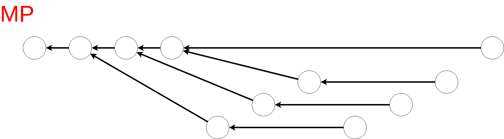
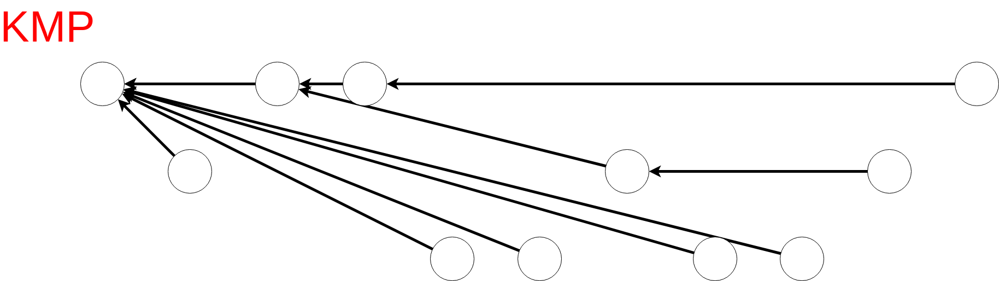

Knuth Morrison Pratt
コードについての説明
検索する文字列を $S$ としたとき前処理 $\O (|S|)$ 時間でテーブルを構築し, テキスト $T$ の中の $S$ の含まれる位置を $\O (|T|)$ 時間で求めるアルゴリズム.
これはMP 法を用いて $0 \le i < n$ について $S[0:i]$ の接頭辞と接尾辞が最大何文字一致しているかを表す配列(longest border) を前処理で求めておけば可能である.
KMP 法ではさらに MP 法で述べたように遷移を省略することで定数倍の改善が可能になるとともにテキストの $1$ つの文字について最大でも $\O (\log |S|)$ 回しか比較しないということも保証される(参考).
例えばテキスト $T=$ "aabaabcaaabaa" からパターン $S =$ "aabaabaaa" を探すときに 0 文字目から比較をし $S[6] \neq T[6]$ となったとき一致判定が失敗する. そのあと MP 法では $S[0:5]$ の接頭辞と接尾辞が最大 $3$ 文字一致することから head を $0$ から $3$ に変えるのに対し,
KMP 法では head を $3$ から初めても $S[3] = S[6]$ から結局同じ位置で $S[6] \neq T[6]$ となり失敗することが分かっているので head を $7$ にするというようなスキップを行う.
つまり最長の border ではなく文字 S[6] が後に続かないような border(strict border と呼ぶ) の中で最長のものを求めている.
以下は検索文字列 $S =$ "aabaabaaa" の場合の link の様子(KMP の場合はこの木の深さが $\O(\log |S|)$).


KMP 法では longest strict border を求めているが MP 法によって求まる longest border
は最小周期長や $S$ 内に存在する prefix $S[0:i]$ の個数($i+1$ を根とする部分木のサイズに等しい) などを計算する場合に有用なので載せておく.
ちなみに KMP 法では $\O (|T|)$ の追加の空間計算量を割いて $table$ を確保していますが, そのような追加の空間計算量を $\O (1)$ サイズのみで(かつ比較回数も少なく)文字列検索を行うことのできる
Crochemore-Perrin algorithm というものがあるそうです.
時間計算量: 前処理 $\O (|S|)$, 検索 $\O (|T|)$
コード
// res に文字列 text の中にある検索文字列 pattern のすべての一致箇所の開始位置が入る(0_indexed).
class KMP
{
public:
string pattern;
int plen;
vector<int> table;
KMP(const string& s) : pattern(s), plen((int)pattern.size()), table(plen+1){
table[0] = -1;
int j = -1;
for(int i = 0; i < plen; i++){
while(j >= 0 && pattern[i] != pattern[j]) j = table[j];
if(pattern[i+1] == pattern[++j]) table[i+1] = table[j];
else table[i+1] = j;
}
}
void search(const string& text, vector<int>& res){
int head = 0, j = 0, tlen = (int)text.size();
while(head + j < tlen){
if(pattern[j] == text[head + j]){
if(++j != plen) continue;
res.push_back(head);
}
head += j - table[j], j = max(table[j], 0);
}
}
};
コード(MP)
class MP
{
public:
string pattern;
int plen;
vector<int> table;
MP(const string& s) : pattern(s), plen((int)pattern.size()), table(plen + 1){
table[0] = -1;
int j = -1;
for(int i = 0; i < plen; ++i){
while(j >= 0 && pattern[i] != pattern[j]){
j = table[j];
}
table[i+1] = ++j;
}
}
void search(const string& text, vector<int>& res){
int head = 0, j = 0, tlen = (int)text.size();
while(head + j < tlen){
if(pattern[j] == text[head + j]) {
if(++j == plen){
res.push_back(head);
head = head + j - table[j];
j = table[j];
}
}else{
head = head + j - table[j];
if(j) j = table[j];
}
}
}
};
// 文字列 s[0, i] の最小周期の長さ
void minimum_cycle(const string& s, vector<int>& res){
MP mp(s);
res.resize((int)s.size());
for(int i = 0; i < (int)s.size(); ++i){
res[i] = i + 1 - mp.table[i+1];
}
}
verify 用の問題
AOJ : String Search 提出コード